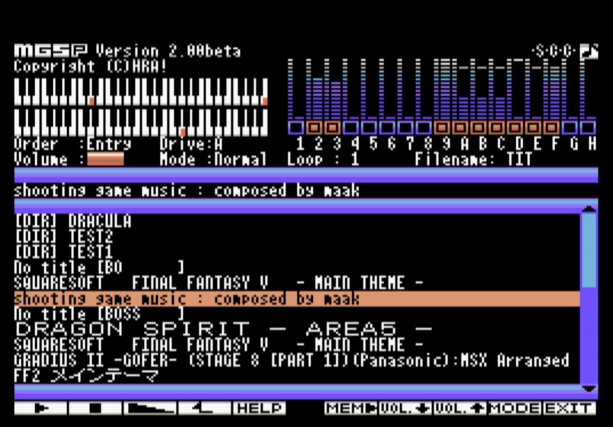

MGS file player MGSP v2.1.3 [Japanese]

Latest version
MGSP v2.1.3 for DOS2/Nextor [Updated 9:15PM, Feb. 9. 2021]
MGSP v2.1.2 for ROM Cartridge [Updated 6:20AM, Jan. 23. 2021]
minimum system requirements for DOS2/Nextor version:
MSX, MSX2, MSX2+ or MSXturboR
MSX-DOS2 or NextorDOS
MGSDRV v3.20 or later (Versions older than v3.20 have not been tested.)
MemoryMapperRAM 224KB (DOS TPA 64KB, MSX-DOS2/Nextor 64KB, MGSDRV 32KB, MGSP KFONT 64KB)
minimum system requirements for ROM Cartridge version:
MSX, MSX2, MSX2+ or MSXturboR
MSX-DOS2 or NextorDOS
RAM 64KB
[Additional Information][External links] GIGAMIX online MGSDRV
Overview:
This is an MGS file player that works when MGSDRV is installed.
It has almost the same purpose as Ain's MGSEL, but with the following differences
Advantages over MGSEL:
(1) It also works on MSX1.
(2) Song titles can be displayed in a mixture of kanji and kana even without a kanji ROM.
(3) You can control it with the joypad.
Inferior to MGSEL:
(1) It consumes a lot of MapperRAM.
(2) Mouse operation is not possible.
(3) There are many features that MGSEL has, but MGSP doesn't.
Usage for MGSP v2.1.1:
Execute the following command at the command prompt. It is not necessary to reside MGSDRV or execute MAINROMP.
A:¥> MGSP
(*) MAINROMP does not need to be run on MSX2 or later; it is a workaround for a problem where MGSDRV v3.20 may not start on MSX1.
(*) MGSDRV.COM and KFONT.BIN must exist in the same directory as MGSP.COM.
(*) If you have MGSP.INI, you can customize it a bit by following the settings described there.
Keyboad
Joypad
Disk label:
[How to Create Floppy Disk Labels (in Japanese)]
MGSP image material:
[MGSP image material datas]
[MGSP Cartridge label datas]
Other contents:
[Other contents]